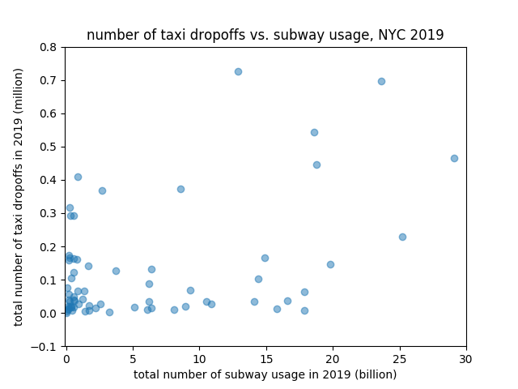

Stephanie Carrero (scarrero), Melia Okura (mokura), Holly Zheng (yzheng40), Becky Mathew (rmathew7)
Analysis Deliverable
Hypothesis
Our hypothesis is that there is a significant linear relationship between the dependent variable of taxi rides within a zip code and the independent variables of the number of station stations, the total number of subway rides, the population, and the average personal income of the same zip code.
Exploratory Visualization
We started off with some exploratory visualizations to illustrate some of the independent variables such as income and population.
We plotted histograms to document the average household income and population per zip code for Chicago.


The horizontal axis of these histograms represents different zip codes, so the numerical values of the zip codes do not matter. While these histograms do not explain the correlation, they merely serve to represent the disparities in population and income that are related to disparities in transportation accessibility and quality.
As a further measure of exploratory visualization, we documented the average train pickups and dropoffs by zip code in Chicago.
We might have chosen to communicate the result as average monthly pickups/dropoffs per station location instead.
Our histograms do not require any other contextualization other than the axis and the title.


We then examined scatter plots of the datasets hoping to see if there are patterns between our independent and dependent variables. We decided to use
scatter plots so that we can see where each data point lies on a graph with two of the variables we are examining, and from there we hoped to be able to
see some initial trends that we would test against using regressions.
When plotting for Chicago, we had to remove 5 zip code data points, because the numbers of taxi rides in these zip codes are significantly higher than other zip codes in the city.
Removing these extreme data points allowed us to have cleaner scatter plots where the points spread out in the range of the axis.
From these initial scatter plots, we managed to see weak correlation between our independent variables and the number of taxi rides in Chicago. For example, for the zip codes that have more subway rides, the number of taxi rides is also higher.

Another scenario we see from these initial scatter plots that is a little surprising is that population does not seem to correlate with the number of taxi rides within a zip code.

The initial scatter plots for New York City, however, show messier results with less obvious correlations.

Regressions & Analysis
Future steps
As mentioned in the Stats section, we plan to do more regressions and difference testings with our data. We also plan to present more advanced visualizations such as bubble maps and heat maps, using libraries from Plotly and OpenStreetMap.